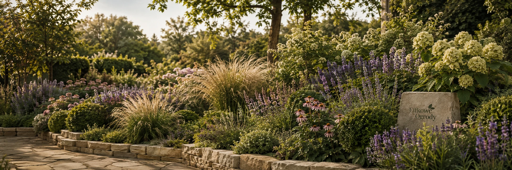
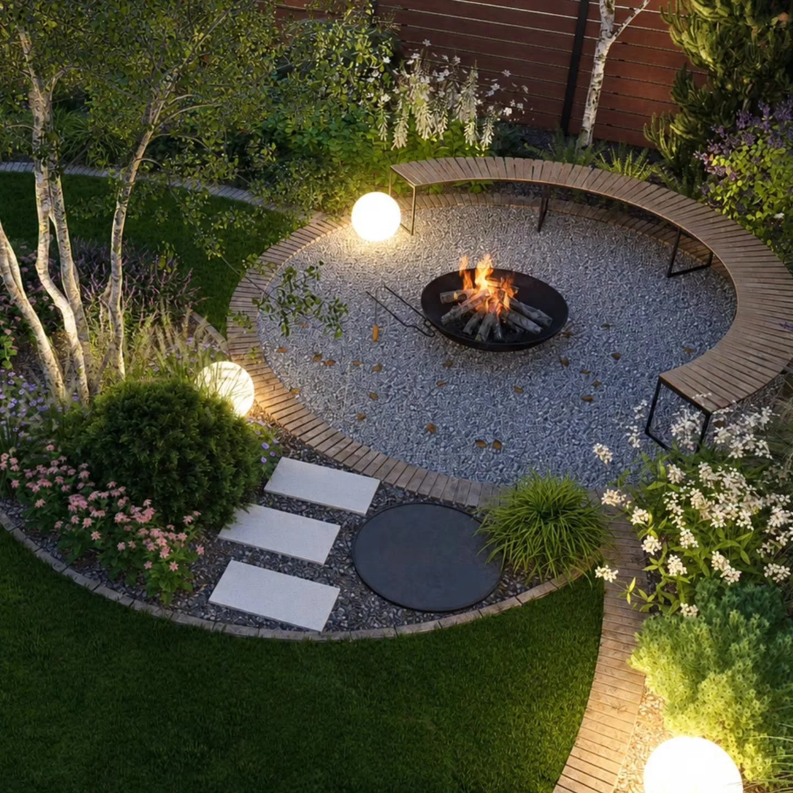
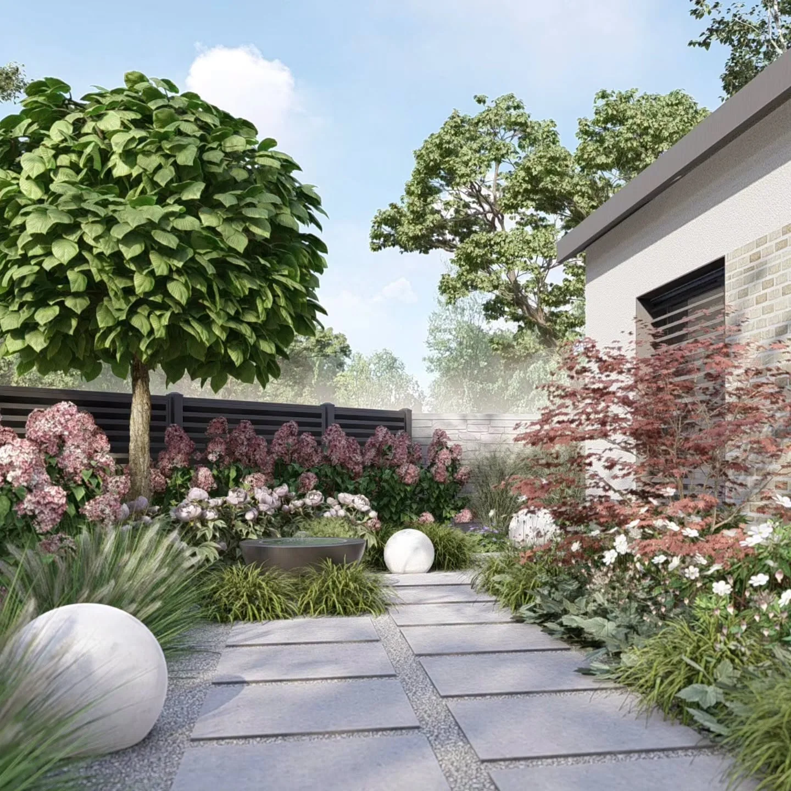
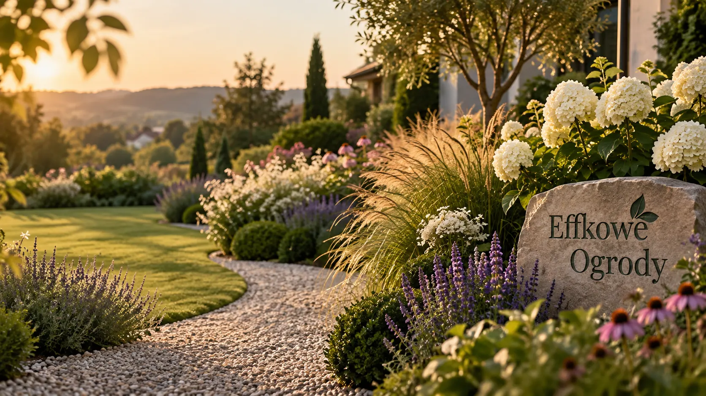

Indywidualny projekt ogrodu
Kompleksowa koncepcja przestrzeni dopasowana do działki, domu i sposobu życia. Układ funkcjonalny, materiały, kompozycja oraz dobór roślin tworzą jeden uporządkowany projekt.
Zapytaj o projektEWA KATRYCZ · EFFKOWE OGRODY
Nazywam się Ewa Katrycz. Jestem architektką krajobrazu i projektantką ogrodów. Tworzę przestrzenie, które mają wyglądać dobrze, ale przede wszystkim dobrze działać — dla ludzi, którzy będą z nich korzystać każdego dnia.
Projektuję kompletne ogrody, prowadzę konsultacje online i tworzę gotowe projekty rabat. W pracy łączę funkcję, kompozycję, rośliny i realne warunki działki, tak żeby efekt był spójny nie tylko na wizualizacji, ale również po latach użytkowania.
ZAKRES WSPÓŁPRACY
Kompleksowa koncepcja przestrzeni dopasowana do działki, domu i sposobu życia. Układ funkcjonalny, materiały, kompozycja oraz dobór roślin tworzą jeden uporządkowany projekt.
Zapytaj o projektSpotkanie dla osób, które potrzebują konkretnej pomocy z istniejącym ogrodem, pojedynczą rabatą, doborem roślin albo kierunkiem dalszych zmian.
Umów konsultacjęGotowe układy nasadzeń dla osób, które chcą samodzielnie odmienić fragment ogrodu i potrzebują sprawdzonego planu, roślin oraz czytelnego kierunku działania.
Zobacz projektyProjekt to nie tylko wizualizacja.
To plan, który ma dobrze działać również po posadzeniu ostatniej rośliny.WYBRANE REALIZACJE
Aktualne opinie będą dostępne bezpośrednio w profilu Google.
DOBRZE ZAPROJEKTOWANA PRZESTRZEŃ
Dobry ogród nie powstaje z przypadkowych zakupów. Najpierw porządkujemy funkcję, komunikację i najważniejsze widoki, później materiały, rośliny i detale. Dzięki temu każda kolejna decyzja ma swoje miejsce.
GOTOWE PROJEKTY RABAT
Gotowe projekty rabat to propozycja dla osób, które chcą działać samodzielnie, ale zależy im na przemyślanym układzie nasadzeń i sprawdzonym doborze roślin.
Przejdź do sklepu Gotowy plan
Gotowy planNAJCZĘSTSZE PYTANIA
Najważniejsze informacje przed rozpoczęciem współpracy.
Tak. Spotkanie online może dotyczyć wybranej rabaty, problematycznego miejsca, doboru roślin lub kierunku zmian w już istniejącym ogrodzie.
Gotowe rabaty są projektowane modułowo, dzięki czemu w wielu przypadkach można zmieniać ich długość lub dostosować układ do dostępnej przestrzeni.
Najlepiej od krótkiej wiadomości z podstawowymi informacjami o działce, etapie inwestycji i swoich oczekiwaniach. Na tej podstawie można dobrać właściwy zakres współpracy.
Tak — konsultacje ogrodowe są prowadzone online. Zakres pełnego projektu i sposób współpracy ustalane są indywidualnie dla konkretnej inwestycji.
KONTAKT
Wyślij kilka zdań o miejscu, etapie inwestycji i zakresie, którego potrzebujesz. Na tej podstawie łatwiej zacząć konkretną rozmowę.
SOCIAL MEDIA
Śledź mnie.
Na Instagramie i Facebooku pokazuję ogrody, rośliny, gotowe rabaty i codzienną pracę nad projektami. To dobre miejsce, żeby poznać styl Effkowe Ogrody jeszcze przed pierwszą rozmową.



